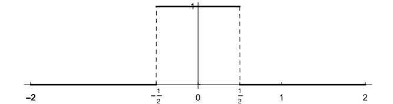
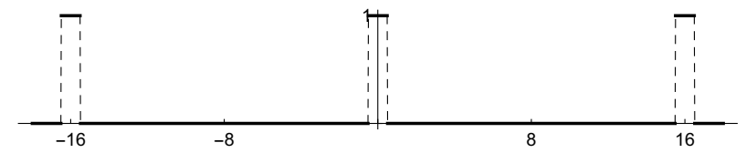
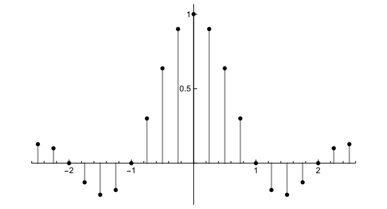
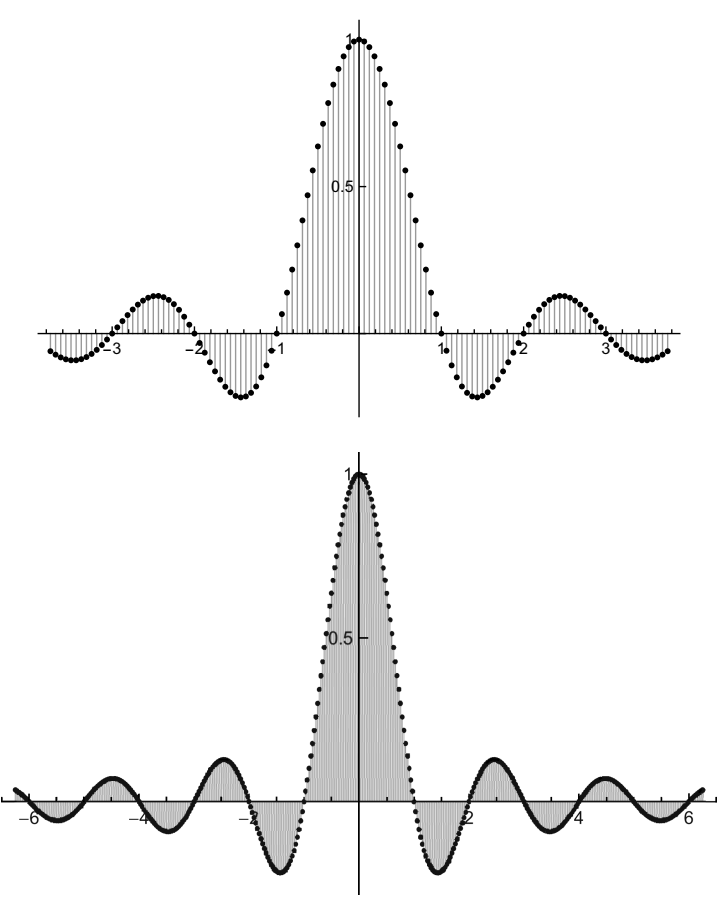

傅里叶变换初探
我们即将从傅里叶级数过渡到傅里叶变换。“过渡”这个词很贴切，因为我们选择了一条傅里叶变换从周期函数过渡到非周期函数的路径。为了完成这一过程，我们将非周期函数（几乎可以是任何函数）视为周期函数随着周期越来越长的极限情况。实际上，这个过程并不会立即产生预期的结果。需要一些额外的调整才能将傅里叶变换从傅里叶系数中导出，但我们会轻松着陆，这将是一次有趣的探索。
一个例子：矩形函数及其傅里叶变换
让我们举一个具体、简单、重要的例子。考虑矩形函数，或简称“rect”，定义如下
\[\Pi(t) = \begin{cases} &1, \quad &|t| \lt 1/2,\\ &0, \quad &|t| \gt 1/2. \end{cases} \]
图示如下，不太复杂。

\(\Pi(t)\)为偶函数——以原点为中心——宽度为 1。稍后我们将讨论其平移和缩放版本。你可以将\(\Pi(t)\)想象成一个开关，它打开一秒，其余时间关闭。\(\Pi\)也被称为顶帽函数（因其图像而得名）、指示函数或区间 (-1/2, 1/2) 的特征函数。
虽然我们已经定义了\(\Pi(\pm 1/2) = 0\)，但其他常见的约定是\(\Pi(\pm 1/2) = 1\)或 \(\Pi(\pm 1/2) = 1/2\)。有些人根本不在±1/2定义\(\Pi\)，从而在定义域中留下了两个空洞。我不想卷入这场争论。这几乎无关紧要，尽管在某些情况下，\(\Pi(\pm 1/2) = 1/2\)的选择最合理。到时候，我们会在特殊情况下处理这个问题。
\(\Pi(t)\)不是周期性的。它没有傅里叶级数。在问题中，你尝试了一些周期化，我再次想用\(\Pi\)来做。作为\(\Pi(t)\)的周期性版本，我们以规则的间隔重复函数的非零部分，用函数为零的（长）间隔隔开。我们可以想象这样一个函数：我们一次打开一个开关一秒钟，反复这样做，并在两次打开之间长时间保持关闭状态。（我们经常听到与这类现象相关的术语“占空比”。）这是周期为 16 的\(\Pi(t)\)的图。

以下是周期为 4、16 和 32 的周期矩形函数的傅里叶系数图；分别为第 0 个系数，以及每个函数的第 10 个系数、第 60 个系数和第 200 个系数。频谱对称，并显示了正负频率。由于周期函数为实数且为偶数，因此每种情况下的傅里叶系数均为实数。这些图显示的是实际系数，而非其幅值。
其实不完全是。我稍后会解释横轴上的缩放比例，也就是为什么傅里叶系数\(c_n\)不直接绘制在整数 n 处。还有一个重要的问题是垂直缩放。但请记住整体形状——这才是重点。


如图所示，随着周期的增加，频率越来越接近，系数看起来确实在遵循某条确定的曲线。我们可以分析一下这个特定例子中发生的事情，并结合一些一般性陈述来引导我们继续前进。
回想一下，对于周期为t的函数\(f(t)\)，傅里叶级数具有以下形式
\[f(t) = \sum_{n=-\infty}^{\infty}\ c_n e^{2\pi i n t/T}\]
频率为 0, \(\pm 1/T\), \(\pm 2/T, dots\)。频谱中的点之间的间隔为 1/T，实际上，在上面的图片中，随着周期 T 的增加，频谱变得越来越密集。第n个傅里叶系数由下式给出
\begin{align} c_n &= \frac{1}{T}\ \int_0^T\ e^{-2\pi i nt/T}f(t)\ dt\\ &= \frac{1}{T}\int_{-T/2}^{T/2}\ e^{-2\pi int/T}f(t)\ dt. \end{align}
我们可以计算\(\Pi(t)\)的傅里叶系数： \begin{align} c_n &= \frac{1}{T} \int_{-T/2}^{T/2}e^{-2\pi int/T}\Pi(t)\ dt = \frac{1}{T} \int_{-1/2}^{1/2}e^{-2\pi int/T}\ \cdot 1\ dt\\ &= \frac{1}{T}\big[\frac{1}{-2\pi in/T}e^{-2\pi int/T}\big]_{t=-1/2}^{t=1/2} = \frac{1}{2\pi in}\big(e^{\pi in/T} - e^{-\pi in/T}\big) =\frac{1}{\pi n}\ sin\ (\frac{\pi n}{T}). \end{align}
现在，虽然频的索引为 n，但频谱中的点为 n/T（n = 0, ±1, ±2, …），因此，将频谱信息（\(c_n\)的值）视为在点 n/T 处求值的\(\Pi\)变换会更有帮助。暂将其写为
\[(\text{transform of periodized }\Pi)(\frac{n}{T}) = \frac{1}{\pi n}sin(\frac{\pi n}{T}).\]
我们就快成功了，但还不够。如果你很想直接取 \(T\rightarrow\infty\) 时的极限，那么考虑一下，对于每个 n，如果 T 非常大，那么 n/T 就非常小，并且
\[\frac{1}{\pi n}sin(\frac{\pi n}{T}) \text{ is about size }\frac{1}{T}\quad (\text{remember sin}\theta \approx \theta \text{ if } \theta \text{ is small}).\]
换句话说，对于每个n，这种所谓的变换，
\[\frac{1}{\pi n}sin\ (\frac{\pi n}{T}), \]
像\(1/T\)一样趋于0。所有傅里叶系数都趋于0，随着\(T\rightarrow \infty\)。为了弥补这一点，我们扩大了T倍，转而考虑
\[(\text{scaled transform of periodized }\Pi)(\frac{n}{T}) = T\frac{1}{\pi n}sin(\frac{\pi n}{T}) = \frac{sin(\pi n/T)}{\pi n/T}.\]
事实上，缩放变换的图就是我上面展示的。
接下来，如果 T 很大，那么我们可以考虑用连续变量（比如 s）替换紧密堆积的离散点 n/T，这样当 s = n/T 时，我们就可以近似地写出，
\[(\text{scaled transform of periodized }\Pi)(s) = \frac{sin\ \pi s}{\pi s}.\]
从积分公式来看，这个过程是什么样的？简单地说
\begin{align} (\text{scaled transform of periodizd }\Pi)(\frac{n}{T}) &= T\ \cdot c_n \\ &= T\ \cdot \frac{1}{T}\int_{-T/2}^{T/2} e^{-2\pi int/T}f(t)\ dt\\ &= \int_{-T/2}^{T/2}e^{-2\pi int/T}f(t)\ dt. \end{align}
我们现在认为\(T\rightarrow\infty\) 具有用连续变量 s 替换离散变量 n/T 的效果，同时将积分极限推至 \(\pm\infty\)。
然后，我们可以将\(\Pi\)的（极限）变换写为积分表达式
\[\hat{\Pi}(s) = \int_{-\infty}^{\infty}e^{-2\pi ist}\Pi(t)\ dt.\]
瞧，傅里叶变换诞生了！或者说，它很快就会诞生。我们使用符号\(\hat{\Pi}\) 来致敬傅里叶系数的符号，但稍后我们会详细介绍符号。
让我们计算积分（我们知道答案是什么，因为我们之前看到了它的离散形式）：
\[\hat{\Pi}(s) = \int_{-\infty}^{\infty}e^{-2\pi ist}\Pi(t)\ dt = \int_{-1/2}^{1/2}e^{-2\pi ist}\ \cdot\ 1 \ dt = \frac{sin\ \pi s}{\pi s}.\]
如下图所示。现在你肯定能看到由离散的、缩放的傅里叶系数图所追踪的连续曲线。
函数\(sin\ \pi x/\pi x\)（现在用通用变量 x 表示）在这个主题中出现得如此频繁，以至于它被赋予了一个名称，sinc：
\[sinc\ x = \frac{sin\ \pi x}{\pi x}, \]
发音为“sink“。请注意
\[sinc\ 0 = 1\]
由于著名的极限
\[\text{lim}_{x\rightarrow 0}\frac{sin\ x}{x} = 1.\]
毫无疑问，你在学习微积分的时候见过这个极限，而且你可能以为以后再也不会见到它了。但 sinc 函数在电子工程和其他领域都非常重要，因为它是矩形函数的傅里叶变换。事实上，可以说很多电子工程专业的学生在梦里都见过 sinc 函数。
Fry’s Electronics 是硅谷及其他地区一家著名的电子产品商店。他们当然了解自己的顾客。我个人也为他们的生意贡献了自己的一份力量。我使用这些照片得到了 Fry’s Electronics Inc. 和美国数学研究所的许可。
一般情况
如果我们一开始就对任意函数进行周期化，并试图让周期 T 趋于无穷大，那么我们也会想到同样的想法——将傅里叶系数按 T 缩放。假设 f(t) 在 \(|t| \le 1/2\) 之外为零。（任何区间都可以；我们只需要假设函数在某个区间之外为零，这样我们就可以进行周期化。）我们将 f(t) 周期化为周期 T，并计算傅里叶系数：
\[c_n = \frac{1}{T}\int_{-T/2}^{T/2} e^{-2\pi int/T}f(t)\ dt= \frac{1}{T}\int_{-1/2}^{1/2}e^{-2\pi int/T}f(t)\ dt.\]
这有多大？我们可以估计
\begin{align} |c_n| &= \frac{1}{T}\Big|\int_{-1/2}^{1/2} e^{-2\pi int/T}f(t)\ dt\Big|\\ &\le \frac{1}{T}\int_{-1/2}^{1/2}|e^{-2\pi int/T}|\ |f(t)|\ dt = \frac{1}{T}\int_{-1/2}^{1/2}|f(t)|\ dt = \frac{A}{T}, \end{align}
其中，
\[A = \int_{-1/2}^{1/2}|f(t)|\ dt.\]
A 是一个与 n 和 T 无关的固定数。我们再次看到 \(c_n\) 像 1/T 一样趋向于 0，因此我们再次按 T 进行缩放并考虑
\[(\text{scaled transform of periodized f})(\frac{n}{T}) = T c_n = \int_{-T/2}^{T/2} e^{-2\pi int/T}f(t)\ dt.\]
在极限 \(T\rightarrow \infty\) 时，我们用 s 代替 n/T 并考虑
\[\hat{f}(s) = \int_{-\infty}^{\infty}e^{-2\pi ist}f(t)\ dt.\]
我们得到了同样的积分公式。
傅里叶变换定义
现在，我们将函数f（t）的傅里叶变换定义为
\[\hat{f}(s) = \int_{-\infty}^{\infty}e^{-2\pi ist}f(t)\ dt.\]
现在，先将其视为一个正式定义；稍后我们将讨论此类积分存在的条件。我们假设 f(t) 对所有实数 t 都有定义。我们不假设 f(t) 在某个区间之外为零，也不进行周期化。这个定义是通用的。请注意：我们并没有推导傅里叶变换——我们只是激发了这个定义。
对于任意\(s\in R\)，将f（t）与复值函数\(e^{-2\pi ist}\) 相对于t进行积分，通常会得到s的复值函数。记住，傅里叶变换\(\hat{f}(s)\)是\(s\in R\)的复值函数。由于对称性的原因，有些情况下，\(\hat{f}(s)\)是实数（如\(\hat{\Pi}(s) = sinc\ s\)），我们将讨论这个问题。
周期函数的频谱是一个离散的频率集，可能是一个无限集（例如，当存在某个阶次的不连续性时），但始终是一个离散集。相比之下，非周期信号的傅立叶变换产生的是连续的频谱或频率的连续体。可能在 |s| 足够大的情况下，变换 \(\hat{f}(s)\)恒等于零–这一类重要的信号被称为带限信号–也可能 \(\hat{f}(s)\)的非零值扩展到\(\pm \infty\)，也可能\(\hat{f}(s)\)仅在 s 的几个值上为零。
虽然傅立叶变换是为了寻找以周期函数为模型的非周期性函数的频谱信息而产生的，但其额外的复杂性和结果的丰富性很快就会让人觉得我们身处一个大不相同的世界。刚才给出的定义是一个很好的定义，因为它内容丰富，而且尽管复杂。周期函数固然很好，但世界上还有很多东西值得我们去分析。
仍然与傅里叶级数类似，傅里叶变换将信号 f(t) 分解为其频率分量 \(\hat{f}(s)\)。我们尚未考虑相应的合成过程。如何从频域中的 \(\hat{f}(s)\)恢复时域中的 f(t)？
从 \(\hat{f}(s)\)恢复f(t)。我们可以进一步拓展非周期函数作为周期函数极限的思想，并探索如何通过其变换 \(\hat{f}(s)\)得到 f(t)。再次假设 f(t) 在某个区间外为零，并将其周期化为（较大的）周期 T。我们将 f(t) 展开为傅里叶级数，
\[f(t) = \sum_{n=-\infty}^{\infty}\ c_ne^{2\pi int/T}.\]
傅里叶系数可以通过在点 \(s_n = n/T\) 处求 f 的傅里叶变换来写出：
\begin{align} c_n &= \frac{1}{T}\int_{-T/2}^{T/2}e^{-2\pi int/T}f(t)\ dt = \frac{1}{T}\int_{-\infty}^{\infty}e^{-2\pi int/T}f(t)\ dt\\ &\quad\quad (\text{we can extend the limits to }\pm\infty \text{ since f(t) is zero outside of [-T/2,T/2]})\\ &= \frac{1}{T}\hat{f}(\frac{n}{T}) = \frac{1}{T}\hat{f}(s_n). \end{align}
将其代入f（t）的表达式中：
\[f(t) = \sum_{n=-\infty}^{\infty}\ \frac{1}{T}\hat{f}(s_n)e^{2\pi is_n t}.\]
点 \(s_n = n/T\)之间的间隔为 1/T，因此我们可以将 1/T 视为\(\Delta s\)，而上面的和可以看作是近似积分的黎曼和
\[\sum_{n=-\infty}^{\infty}\frac{1}{T}\hat{f}(s_n)e^{2\pi is_n t} = \sum_{n=-\infty}^{\infty}\hat{f}(s_n)e^{2\pi is_n t}\Delta s \approx \int_{-\infty}^{\infty}\hat{f}(s)e^{2\pi ist}\ ds.\]
积分的极限从\(-\infty\) 到 \(\infty\)，因为和以及点可以从\(-\infty\) 到 \(\infty\)。当周期\(T\rightarrow \infty\)是，我们期望有
\[f(t) = \int_{-\infty}^{\infty}\hat{f}(s)e^{2\pi ist}\ ds\]
且我们从\(\hat{f}(s)\) 恢复出了 f(t)。我们找到了逆傅里叶变换和傅里叶逆。
傅里叶逆变换，以及傅里叶逆的定义。我们刚刚得到的积分本身可以作为一个变换，因此我们将函数 g(s) 的傅里叶逆变换定义为
\[\breve{g}(t) = \int_{-\infty}^{\infty} e^{2\pi ist}g(s)\ ds \quad(\text{upside down hat – cute; read: “check”}).\]
逆傅里叶变换与傅里叶变换类似，只是后者的复指数带有负号。稍后我们将进一步讨论傅里叶变换与其逆变换之间的对称性。
再次强调，我们暂时只是形式化地处理这个问题，不讨论积分成立的条件。本着同样的精神，我们还提出了傅里叶逆定理，即：
\[f(t) = \int_{-\infty}^{\infty}e^{2\pi ist}\hat{f}(s)\ ds.\]
这适用于（当它适用时）一般函数及其变换。
写得很紧凑，
\[(\hat{f})^{\breve{}} = f\ .\]
顺便说一句，我们本来可以先从 \(\hat{f}\)而不是 f 作为基函数，来完整地推导上面的论证。这样一来，我们就能得到傅里叶逆的补充结果：
\[(\breve{g})^{\hat{}} = g \ .\]
简单总结与展望
让我们总结一下我们所做的工作，一方面是为了巩固想法，另一方面也是为了指导我们下一步的行动。这涉及很多事情，而且都很重要，一切准备就绪还需要一些时间。
-
信号f(t)的傅里叶变换是
\[\hat{f}(s) = \int_{-\infty}^{\infty}f(t)e^{-2\pi ist}\ dt.\]
它是s的复值函数。
-
\(\hat{f}\)的定义域是积分存在的实数集 s。有人说\(\hat{f}\)定义在频域上，而原始信号 f(t) 定义在时域上（或空域，取决于上下文）。我们已经开始使用这个术语了。
对于定义在整个实数轴上的（非周期）信号，我们不像周期信号那样拥有一组离散的频率，而是一组连续的频率。然而，我们仍然将各个 s 称为“频率”，并且所有满足\(\hat{f}\) 的频率 s 的集合就是 f(t) 的谱。
与傅里叶级数一样，人们常常将\(\hat{f}(s)\)的值称为频谱。这种模糊性不应该造成混淆，但它指出了傅里叶级数和傅里叶变换之间的区别，我将在下文简要讨论。同样，与傅里叶级数一样，我们将复指数 \(e^{2\pi ist}\) 称为谐波。
\(\hat{f}(s)\)的一个特定值值得注意；即，对于s=0，我们有
\[\hat{f}(0) = \int_{-\infty}^{\infty}f(t)\ dt.\]
如果 f(t) 是实数（在应用中最常见的情况），那么 \(\hat{f}(0)\)也是实数，即使傅立叶变换的其他值可能是复数。用微积分术语来说， \(\hat{f}(0)\)就是 f(t) 图形下的面积。
-
逆傅里叶变换定义为
\[\breve{g}(t) = \int_{-\infty}^{\infty} e^{2\pi ist}g(s)\ ds.\]
傅里叶逆表明 \[(\hat{f})^{\breve{}} = f,\quad (\breve{g})^{\hat{}}=g\ .\]
总的来说，傅立叶变换及其逆变换提供了一种在信号的两种（等效）表示之间进行转换的方法。
函数 f(t) 和 \(\hat{f}(s)\)可能通过傅立叶逆变换 “等价”，但它们也可能具有截然不同的性质；例如，一个可能是实值，另一个可能是复值。当\(\hat{f}(s)\)存在时，我们真的可以把它代入逆傅里叶变换的公式中–逆傅里叶变换也是一个不定积分，除了减号之外，看起来与正向变换相同–就真的能得到 f(t)吗？真的吗？不明显！值得琢磨。
我们注意到傅里叶逆变换的一个结果，即
\[f(0) = \int_{-\infty}^{\infty}\hat{f}(s)\ ds\ .\]
这个结果没有快速的微积分解释。右手边是复值函数的积分（通常），结果是实数（如果f（0）是实数）。
-
如果 t 具有时间维度，那么为了使指数 \(e^{\pm 2\pi ist}\) 中的 st 无量纲，变量 s 必须具有 1/时间维度，也就是频率维度。一般而言，无论变量在 \(e^{\pm 2\pi ist}\)中的含义如何，它们的量纲都必须互为倒数。
这是两个领域之间倒数关系的第一个例子，未来还会有很多例子。当这种关系出现时，我们会记录下来。期待它们发生。它们将帮助你整理对这个主题的理解。
-
平方幅值\(|\hat{f}(s)|^2\) 被称为功率谱（尤其在通信领域中应用时）或谱功率密度（尤其在光学领域中应用时）或能量谱（尤其在所有其他领域中）。
时间域中的信号能量和频率域中的能量谱之间的重要关系是傅里叶变换的帕塞瓦尔(Parseval)恒等式：
\[\int_{-\infty}^{\infty}|f(t)|^2\ dt = \int_{-\infty}^{\infty}|\hat{f}(s)|^2\ ds\ .\]
这是瑞利恒等式的傅里叶变换版本，也是未来的一个亮点。
关于符号的警告：没有一个是完美的；所有这些都在使用中。 根据要执行的操作或上下文，为傅里叶变换提供不同的符号是很有用的。但这里有一个警告，这是抱怨的开始，也是全面咆哮的前奏。摆弄符号似乎是这门学科中不可避免的麻烦。在正变换和逆变换之间来回切换，在不同域中命名变量（甚至写出或不写出变量），将加号改为减号，取复共轭，这些都是日常的常规操作，如果你不小心，有时即使你很小心，它们也会导致无穷无尽的混乱。当我们有一些例子时，你就会相信我，你会经常听到我抱怨这件事。
以下是一个常见符号惯例的示例：
如果函数名为 f，则通常使用相应的大写字母 F 来表示傅里叶变换。因此，我们可以看到 a 和
A、z 和 Z，以及介于两者之间的所有符号。但请注意，这两个函数的变量通常使用不同的名称，
例如 f(x)（或 f(t)）和 F(s)。这种“大写字母表示法”在工程学中非常常见，但在涉及对偶性
时常常会让人感到困惑，下文将对此进行解释。
然后是：
由于傅里叶变换是一种应用于函数生成新函数的运算，因此有时用一种运算符号来表示也很方便。例如，通常将 fˆ(s) 写为 Ff(s)，因此，重复完整的定义，
\[\mathcal{F}f(s) = \int_{-\infty}^{\infty}e^{-2\pi ist}f(t)\ dt\ .\]
这通常是最明确的符号。
对于那些相信括号力量的人来说，写括号更合适
\[(\mathcal{F}f)(s) = \int_{-\infty}^{\infty}e^{-2\pi ist}f(t)\ dt\ .\]
表明我们采用f的变换，并通过给定的公式在s处评估该变换。但是额外的括号（可能）是一件好事，我们不会使用它们。小心点。
逆傅里叶变换的操作然后由\(\mathcal{F}^{-1}\)表示，所以
\[\mathcal{F}^{-1}g(t) = \int_{-\infty}^{\infty}e^{2\pi ist}g(s)\ ds.\]
傅里叶的逆看起来是
\[\mathcal{F}^{-1}\mathcal{F}f = f, \quad \mathcal{F}\mathcal{F}^{-1}f = f.\]
我们将更频繁地使用符号\(\mathcal{F}\)和\(\mathcal{F}^{-1}\)。这种符号也远非理想，但总体而言，它产生的问题较少。
最后，一个函数及其傅里叶变换被称为构成傅里叶对。为了表示这种兄弟关系，人们设计了各种符号。其中一种是
\[f(t) \rightleftharpoons F(s)\ .\]
Bracewell提倡使用
\[F(s) \supset f(t),\]
其他人也用它。我…不喜欢它。
关于定义的警告。 我们对傅里叶变换的定义很常见，但并非唯一。一个问题是将 2π 放在哪里：像我们所做的那样放在指数函数中；或者将其作为前面的一个因子；或者完全省略。还有一个问题是，哪个是傅里叶变换，哪个是逆变换，也就是说，哪个变换在指数函数中带负号。所有这些约定在日常工作中都有所应用。在本章末尾，我将总结在各种约定下，哪些公式会发生什么变化。我现在才提到这一点，是因为当你和朋友谈论傅里叶变换时，一定要确保你们都知道要遵循哪些约定。友谊就曾因此破裂。
关于光谱的评论。对于傅里叶级数，只有当相应的傅里叶系数\(\hat{f}(n) \ne 0\)时，我们才认为点 n 在光谱中。这是正确的做法，因为在傅里叶级数中
\[\sum_{n=-\infty}^{\infty}\hat{f}(n)^{2\pi int},\]
系数是零还是非零会改变信号。
傅里叶变换则不然。在一个点、几个点或更一般地在一组测量零点上改变Ff（s）的值，不会影响通过傅里叶逆变换从Ff（s）中恢复f（t）。在公式中
\[f(t) = \int_{-\infty}^{\infty}e^{2\pi ist}\mathcal{F}f(s)\ ds \]
改变零测度集上的 Ff(s) 值不会改变积分。这是关于零测度集的关键事实：它们不会影响积分的值。同理，改变零测度集上的 f 值不会改变其傅里叶变换 Ff。
那么测度为零的集合是什么呢？这个问题问得好，但超出了我们的实际需要。简单来说，有限集的测度为零，一些无限集也是如此。
因此，除了一个例外，一个点属于频谱的标准仅仅是傅里叶变换的存在。例外情况是，Ff(s) = 0 不仅在孤立点处，而且在（有限的）区间集合上。如果 Ff(s) = 0 在区间 I 上，则
\[\int_I e^{2\pi ist}\mathcal{F}f(s)\ ds = 0, \]
因此，我们可以在积分中省略这些区间：
\[f(t)= \int_{-\infty}^{\infty}e^{2\pi ist}\mathcal{F}f(s)\ ds = \int_{\text{complement of all usch I’s}}e^{2\pi ist}\mathcal{F}f(s)\ ds.\]
换句话说，Ff（s）=0的区间对于通过傅里叶逆变换从Ff（s）中恢复f（t）没有贡献，我想说这些s值不在频谱中。
重要的例子是采样理论中出现的带限信号（第6章）。这些是信号f（t）
\[\mathcal{F}f(s) = 0\quad |s|\ge s_0,\]
对于某些数字\(s_0\)。我们不会认为\(|s|\ge g_0\)的点在谱中（但关于端点存在争议）。
我们已经完成了警告和评论。接下来是更有趣的事情。